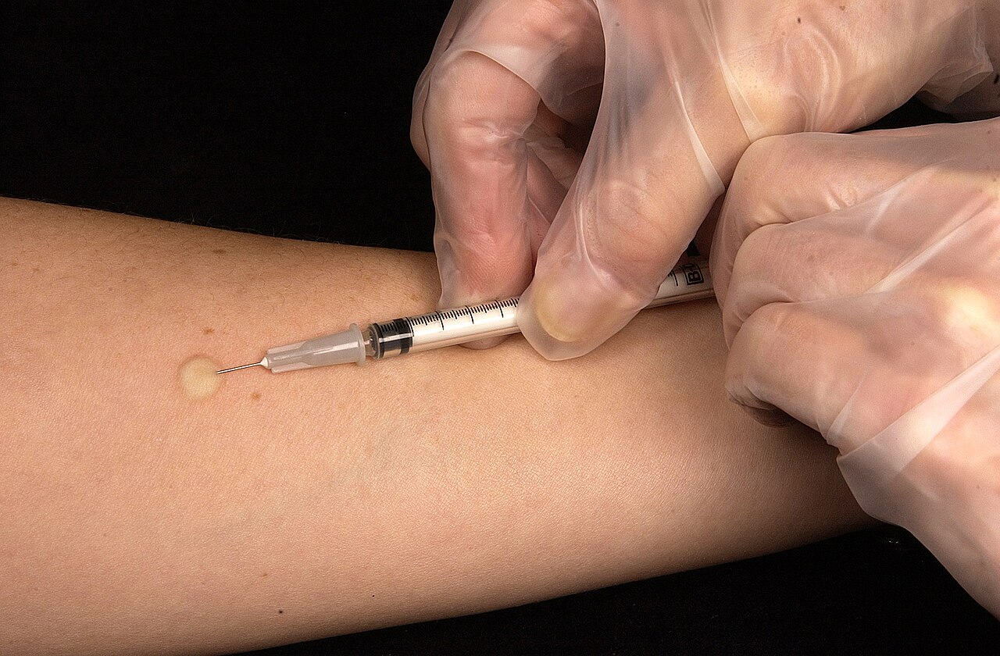

特异性免疫（下）：细胞免疫与免疫调节网络
本期导读
靶细胞 · 两种免疫的配合 · 调节网络

视频原话 · 导读3 句
- 同学们好！这节课梳理人教版选择性必修一第四章第二节的下半部分——细胞免疫与免疫调节网络。9.6s
- 高考常考细胞免疫的过程、两种免疫的协调配合，以及切除胸腺和免疫流程图这类推理题。9.0s
- 我们按八个考点梳理，每个考点都讲清楚怎么考、怎么做。5.5s
细胞免疫的过程01#
病原体进入细胞内 → 抗体进不去 → 靠细胞免疫
易错
活化需要靶细胞的信号和细胞因子；靶细胞裂解死亡属于细胞凋亡
视频原话6 句
- 考点一，细胞免疫的过程。病原体一旦进入细胞内部，抗体无法进入细胞，就要靠细胞免疫。9.1s
- 被病原体感染的宿主细胞，叫做靶细胞，靶细胞膜表面的某些分子会发生变化。7.5s
- 细胞毒性T细胞识别这一变化信号，开始分裂、分化，形成新的细胞毒性T细胞和记忆T细胞。9.3s
- 辅助性T细胞分泌的细胞因子，能加速这一过程。5.0s
- 新形成的细胞毒性T细胞在体液中循环，识别并接触、裂解被同样病原体感染的靶细胞。8.9s
- 易错：细胞毒性T细胞的活化，需要靶细胞的信号和细胞因子；靶细胞的裂解死亡属于细胞凋亡，不是细胞坏死。10.9s
记忆T细胞02#
- 相同抗原再次侵入
- →记忆T细胞
- 立即分化 →细胞毒性T细胞
- →迅速、高效裂解靶细胞
| 比较项目 | 记忆B细胞 | 记忆T细胞 |
|---|---|---|
| 来源 | B细胞增殖、分化 | 细胞毒性T细胞增殖、分化 |
| 再次接触抗原 | 分化为浆细胞 → 抗体 | 分化为细胞毒性T细胞 |
| 共同点 | 长期存在，二次免疫更快、更强 | 只针对同种抗原 |
考法
二次免疫中新的细胞毒性T细胞，主要来自记忆T细胞；记忆细胞只针对同种抗原
视频原话4 句
- 考点二，记忆T细胞。细胞免疫中也会产生记忆T细胞。6.0s
- 如果再次遇到相同的抗原，记忆T细胞会立即分化为细胞毒性T细胞，迅速、高效地产生免疫反应。9.5s
- 记忆T细胞可以长期存在，这和记忆B细胞一样，是二次免疫更快、更强的原因。7.6s
- 考法：二次免疫中，新的细胞毒性T细胞主要来自记忆T细胞的分化；记忆细胞只针对同种抗原。9.4s
靶细胞裂解之后03#
最终清除病原体：抗体 + 其他免疫细胞
易错
细胞毒性T细胞只使靶细胞裂解，不能直接消灭病原体
视频原话4 句
- 考点三，靶细胞裂解以后，会发生什么？4.0s
- 靶细胞裂解，病原体失去了藏身之所，暴露出来。5.0s
- 暴露出来的病原体，可以与抗体结合，或者直接被巨噬细胞等其他免疫细胞吞噬、消灭。8.3s
- 易错：细胞毒性T细胞只能使靶细胞裂解，它不能直接消灭病原体；清除病原体，还要靠抗体和其他免疫细胞。11.1s
辅助性T细胞的作用04#
辅助性T细胞
↙
↘
体液免疫
提供激活B细胞的第二个信号
分泌细胞因子，促进B细胞分裂、分化
细胞免疫
分泌细胞因子
加速细胞毒性T细胞分裂、分化
在体液免疫和细胞免疫中都起关键作用
考法
辅助性T细胞大量死亡（如感染HIV）→ 细胞免疫几乎丧失，体液免疫大大减弱
视频原话5 句
- 考点四，体液免疫和细胞免疫是怎样协调配合的？关键在于辅助性T细胞。7.7s
- 在体液免疫中，辅助性T细胞提供激活B细胞的第二个信号，并分泌细胞因子，促进B细胞的分裂、分化。10.1s
- 在细胞免疫中，辅助性T细胞分泌的细胞因子，加速细胞毒性T细胞的分裂、分化。8.2s
- 所以，辅助性T细胞在体液免疫和细胞免疫中都起着关键作用。6.6s
- 考法：辅助性T细胞大量死亡，比如感染HIV，细胞免疫几乎丧失，体液免疫也大大减弱。9.7s
两种免疫的配合05#
① 进入细胞前
体液免疫
抗体与病毒结合，阻止扩散
→
② 进入细胞后
细胞免疫
细胞毒性T细胞使靶细胞裂解，释放病毒
→
③ 释放出来后
体液免疫
抗体结合，或被其他免疫细胞吞噬
解题方法
病原体在细胞外 → 体液免疫；在细胞内 → 细胞免疫；胞内寄生的病毒、结核杆菌 → 两种都需要
视频原话5 句
- 考点五，以病毒入侵为例，看两种免疫怎样配合。5.1s
- 病毒进入细胞之前，先由体液免疫发挥作用：抗体与病毒结合，阻止它的扩散。7.8s
- 病毒一旦进入细胞，就需要细胞免疫：细胞毒性T细胞使靶细胞裂解，病毒被释放出来。8.6s
- 释放出来的病毒，再与抗体结合，或者被其他免疫细胞吞噬。6.0s
- 解题方法：病原体在细胞外，靠体液免疫；在细胞内，靠细胞免疫。病毒、结核杆菌这类胞内寄生的病原体，两种免疫都需要。12.9s
三大系统相互调节06#
信号分子都要直接与受体接触；免疫细胞表面有神经递质、激素的受体
例：长期精神紧张、焦虑 → 免疫力下降
考法
神经—体液—免疫调节网络是维持稳态的主要调节机制；受体一般是蛋白质
视频原话5 句
- 考点六，神经系统、内分泌系统与免疫系统之间，存在着相互调节。7.0s
- 它们通过信号分子联系起来：神经系统释放神经递质，内分泌系统分泌激素，免疫系统分泌细胞因子。9.7s
- 这些信号分子都要直接与受体接触，才能发挥作用。比如免疫细胞表面，就有神经递质和激素的受体。9.7s
- 举个例子：长期精神紧张、焦虑，会通过神经系统和内分泌系统，使免疫力下降。8.3s
- 考法：神经—体液—免疫调节网络是机体维持稳态的主要调节机制；信号分子的作用方式都是直接与受体接触，受体一般是蛋白质。12.8s
胸腺骨髓受损分析07#
| 处理 | T细胞 | B细胞 | 细胞免疫 | 体液免疫 |
|---|---|---|---|---|
| 切除胸腺 | 不能成熟 | 正常 | 全部丧失 | 大部分丧失，保留少部分 |
| 破坏骨髓 | 不能产生 | 不能产生 | 全部丧失 | 全部丧失 |
B细胞、T细胞都产生于骨髓
T细胞成熟于胸腺
多数体液免疫需要辅助性T细胞
易错
切除胸腺后体液免疫不是完全丧失：少数抗原可以直接刺激B细胞
视频原话5 句
- 考点七，切除胸腺或破坏骨髓以后，免疫能力怎样变化？这是常考的推理题。8.1s
- 切除胸腺：T细胞不能成熟，细胞免疫全部丧失；没有了辅助性T细胞，体液免疫也大大减弱，只保留一小部分。10.8s
- 破坏骨髓：造血干细胞没有了，B细胞和T细胞都无法产生，特异性免疫全部丧失。8.6s
- 解题方法：抓住两点。B细胞、T细胞都产生于骨髓；T细胞成熟于胸腺，而且大多数体液免疫需要辅助性T细胞参与。12.5s
- 易错：切除胸腺后，体液免疫不是完全丧失，因为少数抗原可以直接刺激B细胞，所以还能保留一部分。10.2s
免疫流程图识别08#
① 找抗体 → 浆细胞
② 找靶细胞 → 细胞毒性T
③ 连两条路线 → 辅助性T
解题方法
再次接触抗原时能直接分化为浆细胞或细胞毒性T细胞的 → 记忆细胞
视频原话5 句
- 考点八，怎样看懂免疫流程图？题目常给一张只有字母的流程图，让你判断细胞和物质的名称。9.2s
- 第一步，找抗体：能与抗原结合的物质是抗体，分泌它的细胞就是浆细胞，这条路线是体液免疫。9.4s
- 第二步，找靶细胞：能与靶细胞接触、使它裂解的细胞，是细胞毒性T细胞，这条路线是细胞免疫。9.4s
- 第三步，找同时连着两条路线、还能分泌细胞因子的细胞，它就是辅助性T细胞。7.9s
- 解题方法：最后看再次接触抗原的箭头，能直接分化为浆细胞或细胞毒性T细胞的，就是记忆细胞。9.7s
易错速查✓
先自己判断，再点按钮查看对错与解析。
- 1细胞毒性T细胞能直接消灭靶细胞内的病原体说法错误：只使靶细胞裂解，病原体再由抗体等清除
- 2靶细胞的裂解死亡属于细胞凋亡说法正确。
- 3辅助性T细胞在体液免疫和细胞免疫中都起作用说法正确。
- 4切除胸腺后体液免疫完全丧失说法错误：还保留少部分体液免疫
- 5记忆T细胞再遇相同抗原，会立即分化为细胞毒性T细胞说法正确。
- 6免疫系统不受神经系统和内分泌系统的调节说法错误：三者通过信号分子相互调节
抓住辅助性T细胞，两种免疫一起拿分！
视频原话 · 易错速查5 句
- 最后，用六道判断题检验一下。3.6s
- 细胞毒性T细胞能直接消灭靶细胞内的病原体？错，它只使靶细胞裂解。靶细胞的裂解死亡属于细胞凋亡？对。12.0s
- 辅助性T细胞在体液免疫和细胞免疫中都起作用？对。切除胸腺后体液免疫完全丧失？错，还保留一小部分。12.1s
- 记忆T细胞再遇相同抗原，会立即分化为细胞毒性T细胞？对。免疫系统不受神经和内分泌系统的调节？错，三者相互调节。13.4s
- 八个考点串起来：细胞毒性T细胞裂解靶细胞，辅助性T细胞连接两种免疫，三大系统靠信号分子相互调节。掌握这些，特异性免疫就能稳稳拿分！我们下期再见！16.4s
图片来源
图片来源：Wikimedia Commons —— Greg Knobloch, CDC《Mantoux tuberculin skin test》Public domain
Photo: Greg Knobloch (CDC), public domain